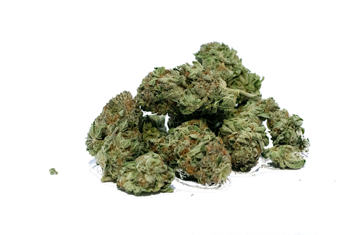
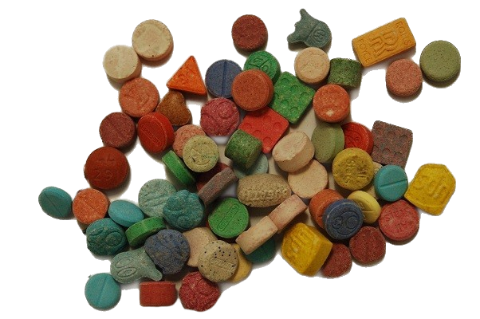
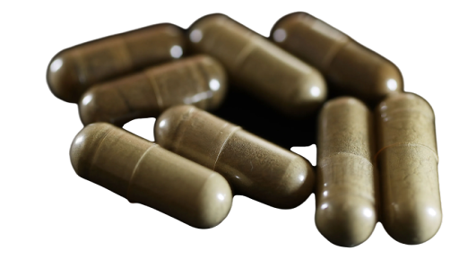

MARIJUANA

Marijuana, also known as cannabis, is a psychoactive drug derived from
the Cannabis plant. It is used for both recreational and medicinal
purposes. The main psychoactive component of marijuana is
tetrahydrocannabinol (THC), which is responsible for its intoxicating
effects.
ECSTASY

MDMA, or ecstasy, is a synthetic drug with stimulant and
hallucinogenic properties. It's used recreationally to boost mood,
energy, and sensory perception, commonly at parties and festivals.
MDMA enhances serotonin, dopamine, and norepinephrine activity in the
brain, inducing euphoria and emotional connection. Yet, it poses risks
like dehydration, hyperthermia, and potential long-term brain changes.
COCAINE

Cocaine is a powerful stimulant drug that is commonly used
recreationally for its euphoric effects. It is derived from the coca
plant native to South America. Cocaine can be snorted, smoked, or
injected, and it produces intense feelings of energy, alertness, and
pleasure.
LSD

LSD, also known as acid, is a hallucinogenic drug that alters
perception and mood. It is synthesized from lysergic acid, which is
found in ergot, a fungus that grows on rye and other grains. LSD is
typically consumed orally and can induce profound changes in
consciousness, including visual hallucinations and altered sense of
time.